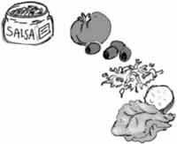
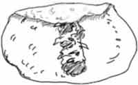
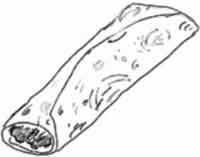

Something You Can Do
Here is a yummy recipe that has a taste of Mexico, the land where Juan lived (see the next story). You must begin your cooking the night before, because beans must be soaked and cooked a long time. Because you will get to practice being patient and “bearing-up,” let us call them
Burro Burritos
Ingredients:
- dry pinto beans
- salt
- flour tortillas (say tor-TEE-yuz)

Toppings:
- lettuce or sprouts (yummy and fun to make!)
- chopped tomatoes
- sliced olives
- grated cheese
- cooked meat
- hot sauce
Equipment:
- pot
- potato masher or electric blender
- several small bowls
- a large, greased skillet
- a pancake turner
- a dishtowel
Follow these directions carefully, and ask before you use the stove.
- The night before, measure the beans and put them into the pot. Cover them with water to soak. For each person you need 1/3 cup dry beans and 1 cup water.
- The next day drain off the water and add hot water, half the amount you used before. Set the pot on a burner on medium heat until the water begins to bubble. Let it bubble softly for 2 hours. Stir once in a while and add extra water if the beans start to get dry.
- Now carefully spoon out a bean and blow on it. Sprinkle on some salt and taste. If it is soft it is done. If it is crunchy, turn up the heat a little and cook longer.
- Add salt until it tastes right, about a heaping 1/4 teaspoon per person.
- It is time to mash the beans! Turn off the heat and scoop out most of the bean juice (save it to eat with rice or for soup). Mash the beans with the potato masher, or ask an older person to blend them for you. They should be thick and creamy when they are ready.
- Next get the tortillas ready. Heat the skillet on medium heat. Warm the tortillas one at a time. When it starts to get hot and soft, flip it over with a pancake turner to warm the other side. Be careful not to burn it! Put the warm tortillas in a dishtowel while you heat the rest.
- Fix the toppings that you will want and put them in the bowls.
- Now we will make the burritos. Lay a warm tortilla on the counter. Carefully spread one large scoop of mashed beans down the middle. Sprinkle on the toppings and fold over the end like this: Finally, fold over the sides and put on a plate to eat. Delicioso!

